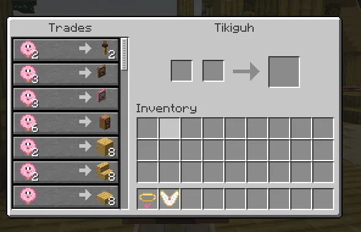
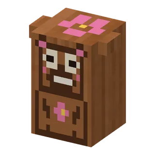
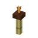
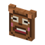
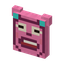
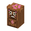
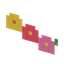
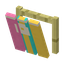
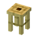
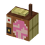

Niemand weet hoe Tikiguh er zonder zijn masker uitziet. Hij houdt het altijd voor zijn snoetje, aan een bamboestokje, met palmbladeren erbovenop. "Een tiki moet je voelen, niet zien", zegt hij dan. Hij verkoopt de mooiste tiki-spulletjes voor schelpjesmunten: fakkels, maskers, lampionnetjes en zelfs een radiootje met hula-muziek. Onder zijn grasrokje zit gewoon een vadsig guhbuikje. Njeg!
Surfen, hula en het Tiki-winkeltje
Tikiguh
Nobody knows what he looks like without his mask. Een tiki moet je voelen, niet zien.Niemand weet hoe hij er zonder masker uitziet. Een tiki moet je voelen, niet zien.

The Tiki shopHet Tiki-winkeltje

Tikiguh's Tiki shopHet Tiki-winkeltje van Tikiguh
| For saleTe koop | PiecesStuks | SchelpjesmuntenSchelpjesmunten | |
|---|---|---|---|
 | Tiki-fakkel | 2 | 2 |
 | Tiki-masker | 1 | 3 |
 | Roze tiki-masker | 1 | 3 |
 | Tiki-beeld | 1 | 6 |
| Rieten dak (+ trap, plaat) | 8 | 2 / 2 / 1 | |
 | Bloemenslinger | 4 | 2 |
| Schelpjeslampion | 2 | 3 | |
 | Surfplankenrek | 1 | 5 |
| Hula-bloemenmat | 4 | 2 | |
 | Tiki-krukje | 2 | 2 |
 | Tiki-radiootje (plays the hula songs / speelt de hula-liedjes) | 1 | 10 |
Never sold out. No clothes here: the Guhwai'i clothes come from the 626 story.
Nooit uitverkocht. Geen kleertjes hier: de Guhwai'i-kleertjes komen uit het 626-verhaal.